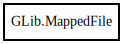

GLib.MappedFile – glib-2.0 Reference Manual
Packages
glib-2.0
GLib
MappedFile
MappedFile
MappedFile.from_fd
get_bytes
get_contents
get_length
MappedFile
Object Hierarchy:

Description:
[
Compact
]
[
Version
( since =
"2.22"
) ]
[
CCode
( ref_function =
"g_mapped_file_ref"
, unref_function =
"g_mapped_file_unref"
) ]
public
class
MappedFile
Namespace:
GLib
Package:
glib-2.0
Content:
Creation methods:
public
MappedFile
(
string
filename,
bool
writable)
throws
FileError
public
MappedFile.from_fd
(
int
fd,
bool
writable)
throws
FileError
Methods:
public
Bytes
get_bytes
()
public
char
*
get_contents
()
public
size_t
get_length
()